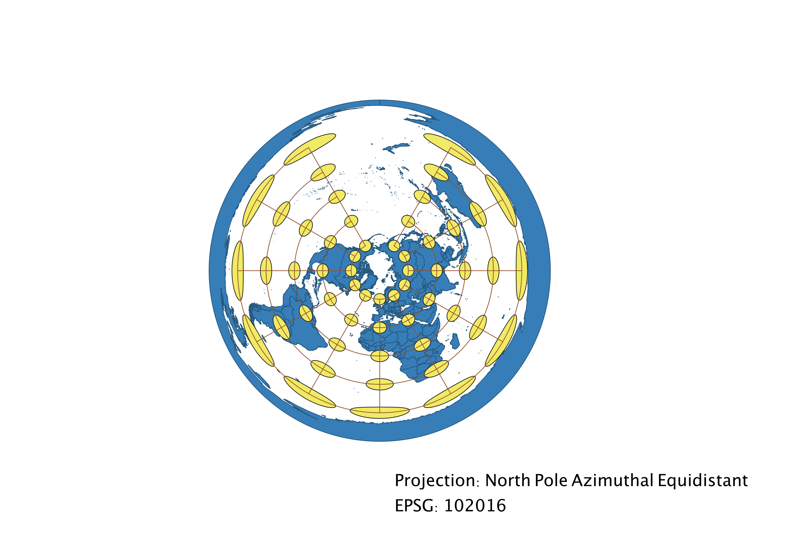

Christian Rasnake: Homework 2
For Homework 2, I displayed the world map in different projections using QGIS
The different projections I used are WGS84, Aitoff, Pseudo Mercator, World Winkel, World Cylindrical, World Equidistant Conic, North Pole Azimuthal Equidistant, World Robinson, and Sphere Miller Cylindrical. I have described the consequences of each projection below.
WGS84
This projection appears to be a flat map that is very good at displaying information near the equator, but does not do as great a job by the poles. As you move upward and downward to the poles, you can see how Antarctica seems to be very large and stretched very wide. A similar pattern can be seen by the top-most circles which are stretched wide and larger than the interior circles.
Aitoff
This projection looks more like a globe and has more shape to it than the previous. This projection does a good job at preserving size near the equator, but as you move closer to the poles, size and shape begins to get more distorted due to the curvature.
Pseudo Mercator
This projection seems the most in line with what I think of when I think of a world map. This projection preserves shape, but distorts size. You can see that Greenland is the same size as the entire continent of Africa.
World Winkel
This projection looks similar to the Aitoff projection, but looks like it maintains the map's characteristics better. There seems to be only a slight distortion of size as you approach the poles, with shape remaining relatively accurate.
World Cylindrical
The World Cylindrical projection preserves area but distorts scale and shape, especially toward the arctic. Since the parallels and meridians are straight lines in this projection, it does not take into account the curvature of our planet earth.
World Equidistant Conic
Conical projections are good for mapping long east-west regions, but it is not good for projecting the full planet. This is useful for mapping distances between places, since distances are accurately represented in an equidistant projection. Furthermore, the area of this projection is distorted but the scale is preserved.
North Pole Azimuthal Equidistant
This projection successfully preserves the distance and direction from the North Pole. It gives a fuller view of the planet when compared to the previous World Equidistant Conic, but otherwise they look similar.

World Robinson
The World Robinson projection looks similar to the World Winkel projection, as it also has distortion toward the poles. The length of the countries also seem to be longer than other projections.
Sphere Miller Cylindrical
Similar to the World Cylindrical projection, the Sphere Miller Cylindrical preserves area and shape near the equator, yet distorts size near the poles. In this map you can again see that Greenland looks similar in size to Africa and South America. This projection also gives a more full view of the earth that looks less compressed at the poles than the World Cylindrical projection.
This homework assignment taught me a lot about the different projections that can be used to display maps.
Each projection has its merits and drawbacks as discussed in my analyses above; specific projections are used to best display the data at hand, depending on what it includes.
Data used for this project
Download Natrual Earth 1:10m Cultural Vector